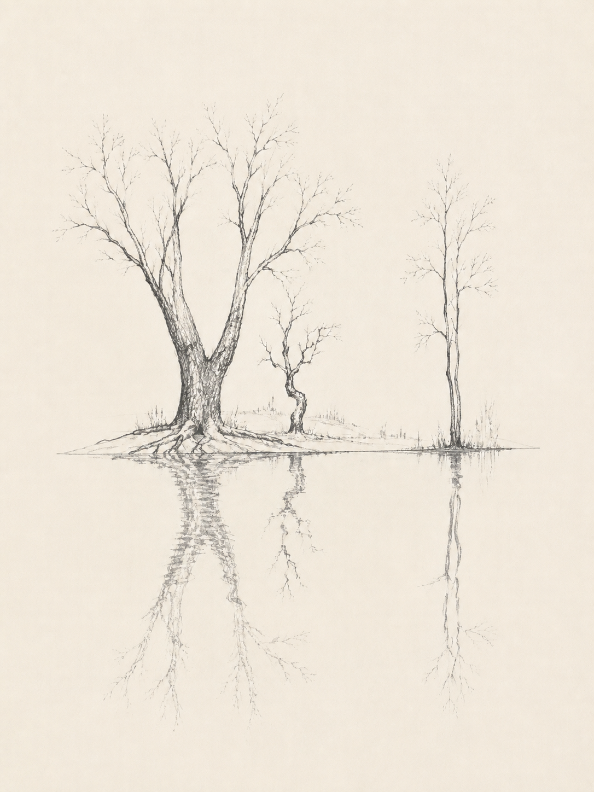

Scroll from the lake, through its reflections, into the city. Move across the lake to gently touch a reflection. Four clearer buildings belong to the surrounding city: photographs, Gedanken, Ich, and an unnamed building that collapses when activated. Tab between buildings, use arrow keys to select another, and Enter to activate. Vertical swipes scroll. Reduced motion skips the animated collapse. The rubble remains for this visit.